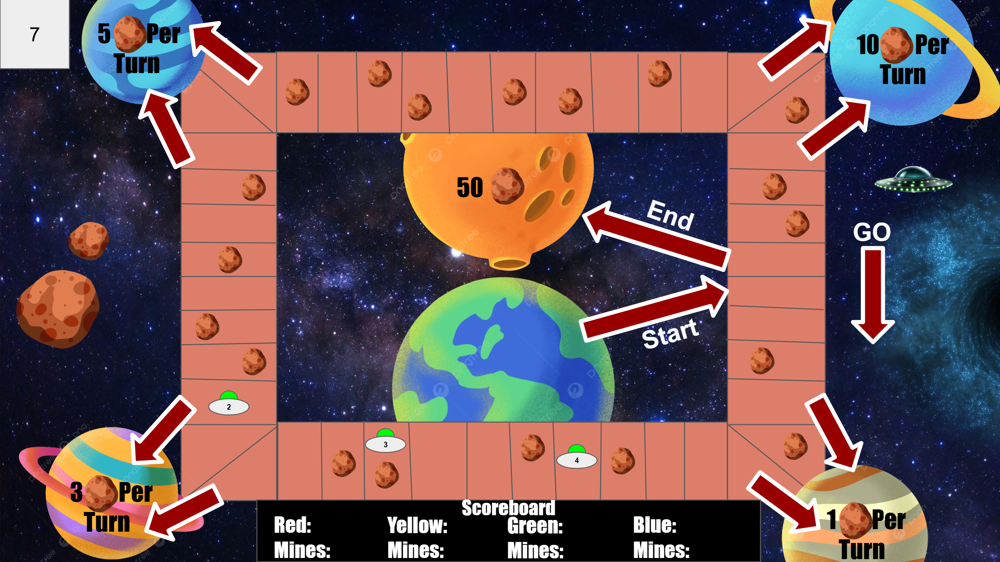
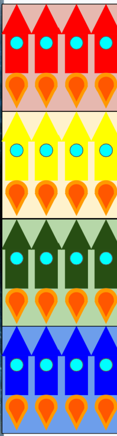
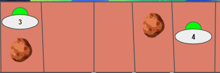

- Goal: Innovate on the style and mechanics of "Viva Topo"
- Innovated ways of collecting resources through multiple ways
- Designed the game to be playable with 3-4 players
- Transformed the story of the game to a space-themed sci-fi adventure

Welcome to Space Chase! In this game, players navigate through a spaced-themed adventure! Your main goal is to use all four of your rockets to collect as many space rocks as possible! You do this by either extracting space rocks from asteroid spaces throughout the board, mining on planets with one of your rockets, or making it to the end of the board to Planet: Oasis. The universe is not completely safe, however, as a dangerous UFO will follow your rockets on your journey, abducting any rockets in its path, so be careful!
The constraints of this project were reletively loose, with the main one being that we had to iterate on Viva Topo. This lead to the design of the project to revolve around the core mechanics and structure of Viva Topo while introducing new thematic and gameplay elements to make it unique. One of the biggest iteration was changing the planets from simply giving a set amount of space rocks similar to Viva Topo, to have them passively give the player space rocks every turn, giving them more functionality. The main tool I used to create a unique spin on Viva Topo was adding as many ways to collect space rocks as possible, leading to players collecting hundreds of space rocks by the end of the game. I did this by implementing multiple methods of collecting space rocks, with asteroid spaces giving double what you roll, the planet mining giving you an infinite supply of asteroids, and Planet: Oasis giving you 50 space rocks for completing the board. This heavily inflites the amount of space rocks you collect, giving the game a new feel.

I interpreted a different version of Viva Topo by shifting the design theme to a different style. I decided to replace the mice with rockets and have the rockets be chased by a UFO. Instead of collecting cheese, the rockets collect space rocks to experiement if the planets they come across are liveable, and replaced "Mouse Paradise" with Planet: Oasis, a planet that is perfectly liveable. A gameplay distinction I wanted to implement from Viva Topo was massively inflating the amount of space rocks you can collect through asteroid extraction, planet mining, and Planet: Oasis.
I was inspired by the cat and mouse dynamic and wanted to create something similar with the rocket and UFO in Space Chase! I was also inspired by the idle mobile games where you passively collect money, which is where I came up with the mining mechanic. One major challenge I ran into was properly balancening asteroid extractions, and planet mining. In the first iteration, mining was overcentralized, with it not even worth it to attempt to extract an asteroid. In the second iteration, asteroid extraction was doubled, and the ceiling for rolling high was raised, make it much better. The early mines were unfortunately overshadowed by this change.
I hosted several playtesting sessions, with groups of 2-3 players. I would have some read the rules of my game, and others I would explain the game to them. I learned a lot from conducting these playtests, mostly about how to properly balance the game. In my first iteration of the game, the UFO was rolled way too frequently, which made it feel annoying to roll. When I adjuested it for the next playtest, the UFO had the opposite problem, where players were rolling it way too infrequently, which forced them to have their rockets be abducted. This taught me how simple number changes can have great effects on how a game plays.
Based on the playtests, I added visual clarity to elements on the board that was lacking in the first iteration. I adjusted how the UFO moves, making the player roll again to move the UFO, and doubled the amount from a successful extracton in order to balance the mechanic out with mining. While not much in terms of mechanics changed in between iteration 1 and 2, both iterations had drastically different gameplay experiences.

If I could create a new iteration of Space Chase!, I would overhaul how the UFO works. I would implement more UFO spaces, and whenever the player would roll UFO, the UFO would move to the next UFO space, abducting any rockets in iths path. I would also change it so the UFO only abducts rockets when it moves, rather than whenever it comes into contact with a rocket.
This change to the UFO addresses multiple problems that occured during the playtest. When players would roll UFO, it would move very infrequenly, and players getting low rolls. This caused the board to become very congested behind the UFO, sometimes forcing players to sacrifice rockets simply because the UFO wouldn't move. Making this change would make this aspect of the game much healthier, and adds the added risk of going in between the UFO's path. This also addresses another comment I recieved during playtesting, which is that players were confused about the UFO spaces. They were meant to indicate where the UFO was supposed to start on the board, but players felt that they should have a function during gameplay. This change fixes two massive aspects that I noticed during playtesting.